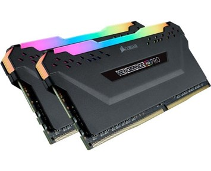

Rammine står för (RANDOM ACCESS MEMORY). I kortfattat så är minnet en av de viktiga delar i en dator. Om man vill dela upp datorns minne så är det en lagringsminne och en arbetsminne, och då snackar man om rammine. Rammine är dyrare och snabbare än lagringsminne. Ramminnet används för tillfälligt lagring av data när någonting körs i datorn.
I flesta fall så raderas all data i rammine när datorn stängs av. Rammineligger på moderkortet och den lagrarv data som data som processorn behöver att använda just eller inom en period.
Ramminet nrukar kallas för internminne, primärminne eller arbetsminne.
Ramminet finns i två fysiska storlekar som den enas kallas för dimm och den andra kallas för so-dimm.
Det finns en till variant men den används i bärbara datorer. De senare generationer av rammine betecknar med dd3 och dd4
och det är helt enkelt beroende på vilken är äldre och vilken är den nyare.
Den vanligaste skillnaden är hastigheten för dem om och hur är deras fysisk kopplingen ser ut.
För att som vi har nämnt i moderkorts information, det finns vissa moderkort som har stöd bara för dd3 eller bara har stöd för dd4.
Man måste ha i baktanken att om man köper en moderkort som har stöd för dd3 så kommer det inte funka om man köper eller har dd4 rammine och det samma tvärtom,
så att ha koll på att de passar till varandra. Det är så här att ju mer din rammine är ju snabbare blir din dator,
alltså då (laggar) den inte mycket. De mest sålda datorer odag är med minst 4 gigabyte och det räcker helt enkelt om du vill bara använda din dator för söka på någonting eller öppna bara några filar.
Men annars om du ska ha din dator för mer jobb eller spela eller har redigering så måste du ha
baktanken att ha minst då 16 gigabyte och uppåt för att när man öppnar flera appar och fönster kommer datorn orka.
